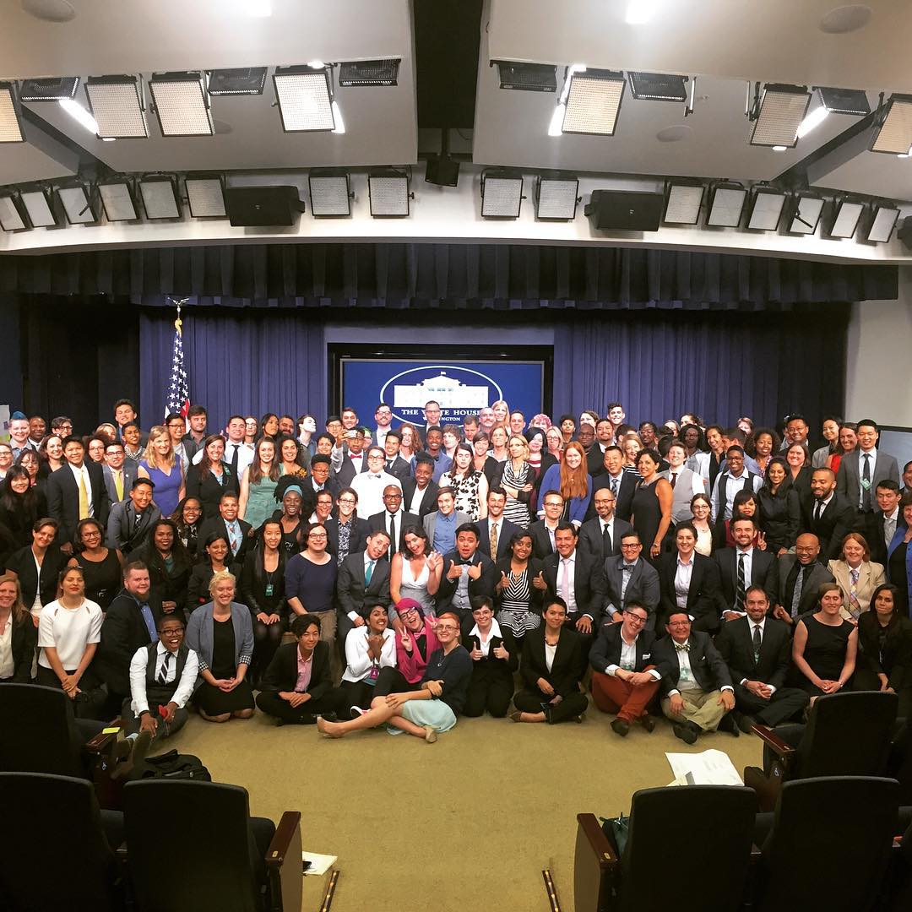
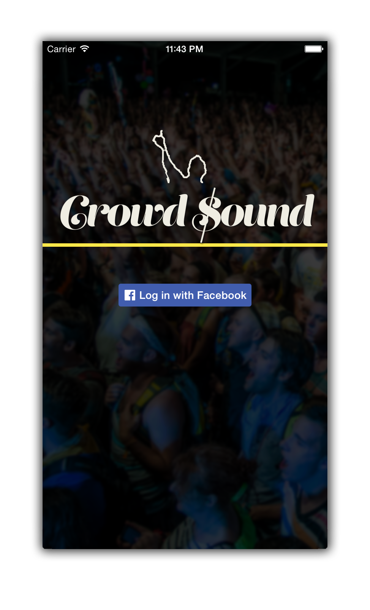
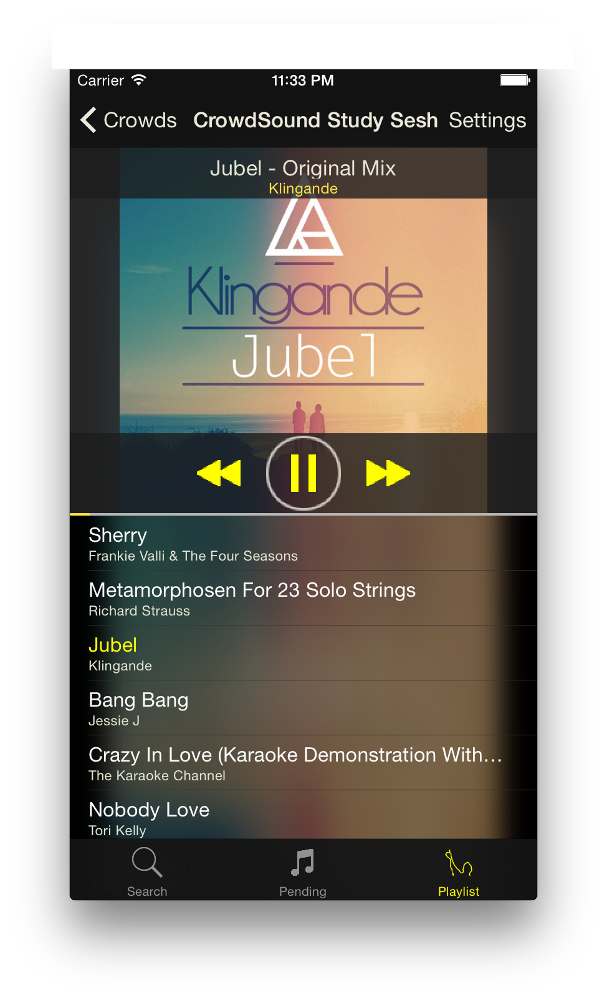
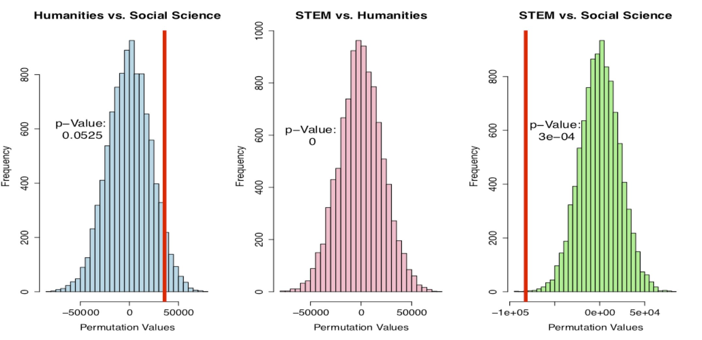

Portfolio


About

Jared Lee Katzman
Yale University - May 2016 B.S. Computer Science Augmenting human intelligence through explorations with data. Interested in using disruptive technology to solve problems in artificial intelligence, the government, environmental science, and biology. Curriculum VitaeContact Me
Bachelor of Science Thesis: Computer Science
“Using Deep Learning to Discover Natural Features of Patients’ Genomic Data to Improve Prognostic Cancer Models"
As a part of joint research between the Yale Department of Statistics and the Yale School of Medicine, I am applying deep learning to the application of survival analysis and cancer research.
Expected Publication Date: April 2016
- Date: 2016-01-08 00:00:00-05:00
Wordly
There has been one idea that I have been thinking about for many years. My roommates and family will agree that I have been discussing it ad nauseum since freshman year. I never knew how to implement it. I did not know where to start. But today, I finally can say I am on the path to making my dream become a reality. I present: Wordly.
Wordly is based on this idea of a reverse dictionary. I'll admit it. I have a lot of trouble conjuring up the best word to use in a sentence. Too many times I'm stuck with that 'tip of the tongue' feeling. I know my long, superfluously worded phrases have more succinct alternatives (Wordly should recommend me the word verbose), but looking for the perfect word is time-intensive. A reverse dictionary would take a description I am thinking of and return words with related definitions. This would be an indispensable tool while writing essays, poetry, and even these posts.
When I thought of this idea, I immediately turned to Google. Search results pointed me first to Wikipedia, as always, which showed me the term conceptual dictionary. So, according to Wikipedia, Wordly is an attempt at constructing a conceptual dictionary rather than a reverse dictionary. I learned this idea is not that new, but I noticed that there were only a few examples of conceptual/reverse dictionaries. Most of them are in-print. One, however, was fairly promising.
OneLook.com has constructed a reverse-dictionary from indexing over 100 different dictionaries. They say it works by using various "statistical language processing hacks." Overall, OneLook's performance is really good, but I want to see if I could do it better.
For a full explanation of how Wordly works check out our formal report on GitHub.
On cursory glance, I would say that Wordly has mediocre performance. Our final testing Euclidean distance error was about ~2.06. Unfortunately, that is not fairly impressive. Most word embeddings have a nearest neighbor in the range of ~1.3 units. Thus, if we are predicting with an error radius of 2.06 it will be difficult to have the correct word be the first choice (or even in the top 10).
However, all in all I would say I am proud of this first iteration. First off, we faced a couple of limitations. We had about a week to design and implement this system and a half a week of training the system (we trained on the Yale High Performance Computing Cluster). Training could take anywhere from 5 to 30 minutes per epoch; therefore, we only were able to try out a few different models. Second, there is a lot of room for improvement.
-
For the sake of time and computational resources, we outsourced our word embeddings to Polyglot. A friend recommended Polyglot to us because it provided easy to use word embeddings in a simple pickle file. The set embedded 100,000 vocabulary words into 64 dimensions. Reflecting back, I would have liked to use a more substantial set. In future experiments, I plan to use Google's Word2Vec embeddings (3 million words into 300 dimensions) or a comparable dataset.
-
Another disadvantage of Polyglot's dataset was their vocabulary list. Many words were proper nouns, poorly processed (e.g. words contained punctuation), or absent. This made it difficult to cross reference with our dictionaries. Compared to OneLook.com hundreds of dictionaries, we were only using three. In total, we had about 300,000 training examples and 100,000 testing examples. I would like to run experiments to see how the amount of data affects the model's performance. And I would like to increase the size of our dataset because I believe more linguistic diversity will help the model better generalize for user input.
-
Lastly, there are so many more RNN models to try. We did not get to explore nearly as many types of models as we had hoped to. I am very new to the ideas of RNNs and NLP and so I do not have as strong of an intuition. I would love to get my hands dirtier with more research. I've always wanted to try genetic algorithms, so maybe this will be my chance.
In conclusion, for a quickly implemented, initial experiment, I am estatic with the promise of this project. I have an incredible feeling as I took an idea that I have cared about for years, and at the end of the day, I experienced the sincere joy of execution and seeing it through to fruition.
- Date: 2015-12-28 00:00:00-05:00
- GitHub: http://github.com/HombreDegatos/Wordly
Exploration of Popular Music in Spotify’s 'Gay' Community
The first assignment for my history course 'United States Lesbian & Gay History' with George Chauncey asked us to:
When I first read this assignment, my inner data-nerd jumped at the prompt. Spotify has seventy-million users worldwide and almost every friend or acquaintance of mine has either directly used it or at least knows of the service. How could I use Spotify to help discover the most popular songs distinct to the LGBTQ community?
There was no way I would be able to easily ascertain the sexuality or gender identity of Spotify users. So some type of survey of individual basis was out of the question. However, one of the greatest features of Spotify are the public playlists. These playlists have different keywords and titles. If there were a substantial number of playlists marked with LGBT or Q keywords, I could take the list of songs as a metric for association with the current LGBTQ consciousness.
I have used the Spotify API before and each time it is a huge headache. Luckily, I found a Python project that provides an easy to use interface: Spotipy.
I searched Spotify playlists for four different keywords: gay, lesbian, bisexual, and transgender. Unfortunately, only the keyword gay provided enough results (161,403 songs in 604 playlists). Lesbian came second with 7,198 songs in 52 playlists. Thus, I narrowed down my research to only 'gay' playlists.
Here were the results for the top 5 most popular song on playlists with the keyword 'gay':
| Song | Artist | Count |
|---|---|---|
| Where Are Ü Now | Jack Ü & Justin Bieber | 127 |
| See You Again | Wiz Khalifa & Charlie Pluth | 109 |
| Trap Queen | Fetty Wap | 102 |
| Thinking Out Loud | Ed Sheeran | 94 |
| Stole the Show | Kygo | 87 |
When I first saw these results, I was a little confused because while all of these songs are incredibly trendy and popular, none of them stood out to me as stereotypical gay anthems.
But then I thought about it more and it made sense. Queer communities have become the centers for nightlife in many metropolitan areas because of their hip and culturally relevant reputations. For example on any weekend night in Capitol Hill, the historic gay district of Seattle, you will find an influx of young, college-aged (mostly straight) bar-goers flooding the establishments either owned or frequented by the gay community. Thus, I believe the prevalence of such songs in my results could be interpreted in two ways: as the gay community's ability to discover popular songs before they get big or the assimilation of music tastes in the queer community.
For the first case, gay-clubs could have found these songs first and were able to draw in heterosexual because of the captivating nature of the clubs’ music choice. However, with my limited data, the implications could very be the opposite. The gentrification of these gay spaces is a current trend in urban areas. Gay communities could be adopting the musical tastes of the straight community as a result of assimilation.
Either way, I wanted to dive deeper to see if I could still find a list of distinctly gay songs. I played around with different algorithms that tried to utilize a Spotify song's popularity index, but I didn't like anything I came up with. Then I realized - if the top songs are all songs on the Top 100, why don't I simply filter out the Top 100?
This resulted in the Top 5 occurring songs:
| Song | Artist | Count |
|---|---|---|
| Stole the Show | Kygo | 87 |
| Firestone | Kygo | 84 |
| Chandelier | Sia | 79 |
| Wannabe | Spicegirls | 72 |
| Believe | Cher | 67 |
This is more of a list that I would expect to see. Cher and Spice Girls have long been gay icons. Chandelier was a common gay anthem in Tel Aviv circa Summer 2014. Kygo stumped me at first, but I can easily see Stole the Show's music video interpreted as a metaphor for gay experience (SPOILER: the military intervention once the aliens find each other can be a metaphor for America's policing on homosexuals, who are commonly seen as alien to society). Now I cannot stop listening to Stole the Show.
If I were to extend and improve this research, I would extract temporal data about the songs and playlists. I could cross-reference this with a Top 100 Billboards dataset. Then I would have more insight on who first found a song popular: the queer community or pop culture.
I have released my datasets and iPython notebook code on my GitHub account.
- Date: 2015-09-12 00:00:00-05:00
- GitHub: https://github.com/HombreDeGatos/Spotify-Gay-Anthems
#transneeds
At Amazon this past summer. I received an email asking for nominations to the White House LGBTQ Tech & Innovation Summit. On a pure whim, I decided to nominate myself. All they required was my name and how I identified myself. I was just an intern - I felt that I had no chance, but there was nothing to lose by applying. Well, to my utmost surprise, I received an email a few weeks later that led to one of best experiences of my life.

The White House LGBTQ Tech & Innovation Summit brought together a diverse group of technologist and activist to identify national problems in criminal justice, economic inclusion, education, and climate change (to name a few) and come up with solutions. I do not remember being in a room with that much energy and passion. It was inspiring and I would even say life-changing.
One of the takeaways from the summit was the option to join a team and work on a project that put into action the ideas generated from that day. I fortuitously had the chance to join what was to become #transneeds. Our mission was to identify ways the federal government could better serve the transgender community. The hashtag #transneeds was a listening campaign on social media, where members of the transgender community could tell their story and report what they felt the government needed to do. We then aggregated the data to provide recommendations to the White House.
Results:
I think our presentation Ina gave for the We The Geek's Demo Day is the best description of everything we were able to accomplish.
Personal Insights:
I learned so much from being a part of this project and being part of such an amazing team.
First, working remotely is a challenge. To produce results when team members are across the country takes extra organization and commitment. Missing a meeting is not the end of the world, but I found that catch up is much more difficult over the Internet than in person.
A good survey needs to account for people who cannot take the survey. At first, I thought the social media campaign through Twitter and Facebook was perfect. But as we discussed it more and more, I realized how social media accounts are becoming less anonymous unless they are throwaway accounts. This is a huge barrier for someone who cannot go public with their identity. Not to mention the 19% of respondents to the NCTE National Survey who have experienced homelessness at some point in their lives. So just counting on social media was insufficient. A texting-hotline provided an extra dimension to the survey that I do not think social media could ever provide. The stories we received were both heart-breaking and inspiring.
Overall, it was an honor working with the #transneeds team. And I'm excited to see what will come of it.
- Link: https://twitter.com/transneeds
- Date: 2015-08-04 00:00:00-05:00
CrowdSound
If someone hears that you major in Computer Science, one of the first questions they ask is, "Can you make an app for me?"
Today we are ruled by apps. Our phones have become an extension of ourselves. Any problem we have, we imagine an app will solve it.
I constantly look at my phone and wonder - how could it make my life easier? Luckily, I had the opportunity to teach myself iOS App development for my Software Engineering project. And like most technology, the development becomes a lot less ominous once you actually take a moment and learn how it works.
I had a somewhat of a difficult time scouring the net for thorough Swift and iOS tutorials. Fortunately, my school provides me with a subscription to http://lynda.com. The tutorials I found gave me enough foundation to start hacking away on my own.
- I actually did the basic iOS tutorial first because it was easy enough to follow along. This gave me a framework to start visualizing the code and flow of an iOS program.
- Then I went back and did a Swift tutorial to beef up my knowledge of the language. This was great it exposed me to closures, casting, callbacks, and all of our lovely programming techniques.
- I wanted to get my hands dirty with creating an app. I followed along with this tutorial to get a better feel of the development process.
- Building a Note Taking App (1hr 20m)
- Simple To-Do List (22m)
- I was then ready to start fiddling away at my own app. I quickly learned that the iOS UIKit has very specific interfaces. The Apple documentation is easy to navigate once you have more iOS development under your belt. But at first, it is difficult to know what each method does or even what pane in XCode to look at while developing. I found that looking up tutorials for each individual UIKit interface sped up development time, for example:
- UITableView Tutorial (17m)
- UITabBar Tutorial (6m)
On this coding excursion I also discovered my love for 2x speed tutorials. Going from 14 hours of video to 7 hours is the difference between a full week and a weekend. I have trouble now watching tutorials at normal speed.
After hours and hours of work, my group finished our first ever iOS app.
CrowdSound is coined a 'democratic-DJ' app. Friends can join a 'Crowd' and the playlist is determined by the number of votes a song receives. This is ideal for house-parties, coffee-shops, and casual hanging out. Any time someone needs to take control of the music, they can CrowdSound.
One of my favorite parts of the app development processes was having control over the UI because it brought together my two passions of art and coding.
| Log-in Screen | Music Player |
|---|---|
|  |  |
The app is not perfect. If we were to do it again, there are definitely some system designs we would do differently. For example, switch to a peer-to-peer architecture instead of a simple server-client one.
Overall, learning how to make an app has changed the way I interact with my phone. Every app I use, I deconstruct how they coded it. It has changed my thinking. I recommend every coder with a smart-phone go out and learn how to make an app. Now when someone asks, "Can you make me an app," I can confidently answer yes.
Update: I realize that Swift 1.0 and iOS 8 are already out-of-date. I can no longer find the Swift tutorial I used (Swift Essential Training with Simon Allardice), so I updated the tutorials with any corresponding links I found on Lynda.
- Date: 2015-04-29 00:00:00-05:00
- GitHub: https://github.com/HombreDeGatos/CrowdSound
Analysis of Yale College Majors
I did this study awhile back when I first started data scraping and learning statistics. Yale has this tool called the Yale Facebook. You can see everyone's pictures, listed major, dorm, home, and email addresses. It is fairly invasive, but students are allowed to opt out.
While running around campus, I always pose questions to myself about the student body. What does the network graph look like for extracurriculars? Is there socioeconomic distribution between off-campus and on-campus residents? Who takes which classes?
Most of these explorations are pipe dreams because Yale is stringent with their data policies. So the Yale Facebook is a treasure of a resource I have always wanted to capitalize.
For this study I looked at the relationships between a Yale student's major and socioeconomic status. I took the dataset I created from Yale Facebook and cross-referenced a student's zipcode with Zillow's public dataset. Zillow calculates a Zillow Home Value Index (ZHVI) which follows home value for a particular geographic region. Because of the aggregated nature of this data, our results are not the most precise. A student may come from a wealthy region, but may be on the other side of the distribution (and vice versa). Therefore, this study is instead looking at the relationship between a student's major and the socioeconomic status of their listed home address.
In total, I had a listed major and Zillow data for 3,654 students (about 67% of the undergraduate student body). Some baseline statistics:
| Yale ZHVI | Nation ZHVI | |
|---|---|---|
| Mean | \$520,705.50 | \$230,614.90 |
| Median | \$378,100.00 | \$167,600.00 |
I attempted to look at the distribution across all majors, but so many majors had such a small sample size (e.g. for the Physics & Philosophy Major N=1) that nothing would be significant. So instead, I grouped students majors into 4 categories: Humanities, STEM, Social Science, and Undecided.
Here is where I found something interesting. I noticed that the mean difference between students majoring in Humanities and STEM was \$118,098. Now that is a hefty difference.
I wanted to explore whether or not this was significant or due to randomness so I performed a permutation test between each of the departments with a significance level of 5%.
Aside: A permutation test is when you take two groups, let's say Group \(A\) and Group \(B\), and randomly assign your data to one of these two groups. You then calculate the mean difference between these new groups and do this over and over again. You end up with a distribution of possible mean differences for the two groups. This allows you to compute a p-value for the groups' observed difference in means (p-value is the probability of at least your observed difference, under the assumption that there is no difference between the groups).

Under this test, we are positive we can reject the null hypothesis for STEM students versus Humanities (and for STEM vs. Social Science too - but difference was less drastic). And so the difference in socioeconomic status between STEM majors and Humanities majors is significant.
While this data and analysis is very rough, it elucidates a fairly interesting trend. STEM jobs are known for their stability and high salary - nationally, are students from lower income backgrounds choosing these majors (which is great because tech already has a huge diversity problem)? Or that, because Yale is trying to increase both the number of students majoring in STEM and students from lower-socioeconomic regions, admitting students that fit both criteria is the easiest solution?
This one exploration poses even more questions than it attempted to answer. What is the race break-down of majors at Yale? Could we run this study on other schools? How can we refine our data to a more individual level? Usually more questions is a bad thing - for me that means more opportunities for exploration.
Disclaimer: Yale University did grant me access to use the Yale Facebook data for my project. However, I was required to anonymize all data while working with it and expose of it once I was done. Therefore, I only have access to my results and would have to rerun the program if I wanted to further dive into the data.
- Date: 2014-04-30 00:00:00-05:00